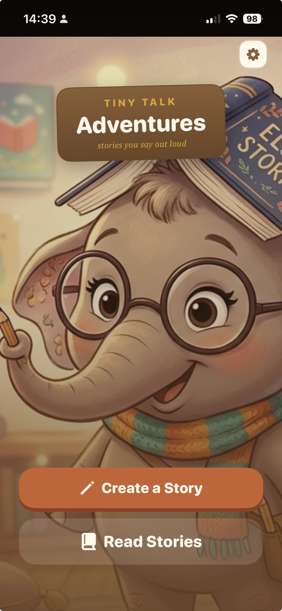
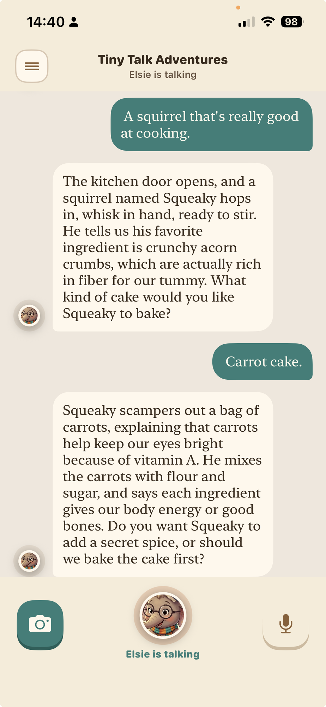
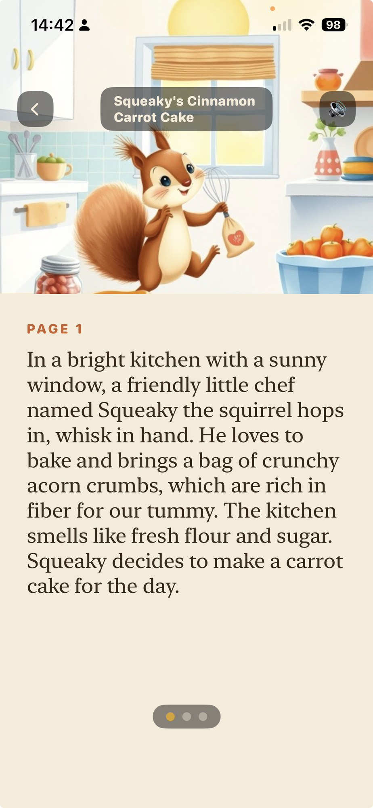
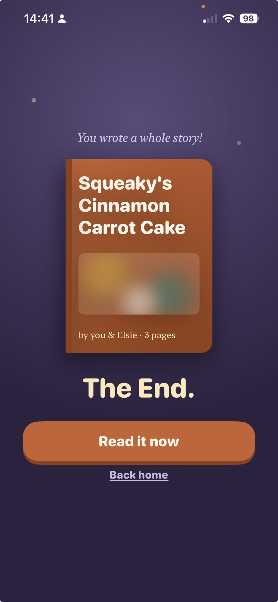
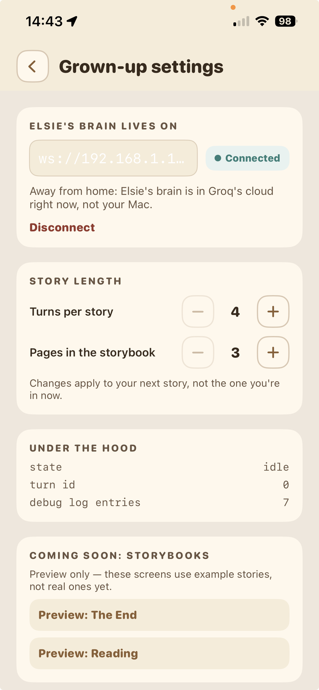
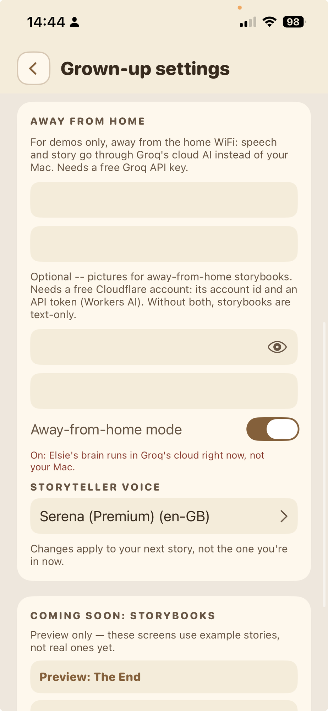

Tiny Talk Adventures lets a child and Elsie the elephant make up a story together, out loud — then turns the conversation into an illustrated book. Speech recognition, the language model, the voice and the artwork all run on one M1 MacBook Pro with 16 GB of RAM.

Young children think out loud and interrupt with a better idea halfway through yours. Most voice interfaces expect the opposite: wait for the tone, speak, wait again. Tiny Talk follows the child's rhythm — they can cut in at any moment, and Elsie stops and builds on what they said.
Interruptions are welcomed, never corrected, and most replies end by asking the child what happens next.
Real animal facts from an external source, not the model's memory — inside a story world that stays physically real.
A child's voice is sensitive data. At home it stays on the family's own devices — no accounts, no analytics, no third-party inference.
Elsie's always ready to listen, even when telling her part of the story. No buttons to learn — the child just speaks, and Elsie stops.

Squeaky's acorn crumbs are high in fibre; his carrots carry vitamin A. The child listens — the transcript is for grown-ups.

Both voices are retold as picture-book pages, illustrated locally, with the same character on every page.

The turn budget runs out, the child asks to stop, or Elsie concludes — whichever comes first.
Solid lines run at home, on hardware the family owns. Dashed boxes are the away-from-home demo mode only.
Why it matters —
Each goal shaped the system — and each one taught us something.
Animal facts come from an external API, not model memory. The story world stays physically real.
What we learned — A model will state a fact it never fetched. The book's closing fact is now written by deterministic server code, after the model was caught inventing one.
Five narrative stages over a turn budget, each adding its own guidance.
What we learned — A good story needs an ending more than it needs length. Testing cut the target from 12 turns to 7.
Small, capable models, measured on this Mac: an 82M-parameter voice, a 1B transcriber, a 9B storyteller. Where a rule will do — story staging, a double-safety check — no model runs at all.
What we learned — Models that each fit can still crowd each other out. Kept loaded side by side, the speech, voice and image models held 12 GB of a 16 GB Mac — before the storyteller itself — and every turn slowed as the machine swapped.
At home, a child's voice reaches only their phone and the family Mac. No accounts or analytics.
What we learned — Cloud use exists only in the away-from-home mode, and the switch says so in plain words for grown-ups.
Every place that generates text for the child has its own safeguards and retry logic.
What we learned — Every new way of generating text needs its own safeguards. A review found the storybook rewrite had shipped with none.
The storybook rewrite and a live turn share one local LLM. A REWRITING state makes overlap impossible — on every path into a new story, including the child simply talking again.
Story stage, animal fact and camera object all arrive as guidance in the same single LLM call. A new capability costs no extra inference.
Transcription can take seconds, so a reply may arrive after the child has moved on. Tagging each frame with its turn lets the phone drop stale replies — misattribution was confirmed on real hardware before this.
iOS backgrounding mustn't kill a story. The session persists across sockets; a disconnect doesn't cancel the turn — its output is buffered and replayed on reconnect.
One settings screen shows where Elsie's brain is running, whether it's connected, and how long stories last. Turning on away-from-home mode shows a clear warning that the conversation now goes to a cloud service.

